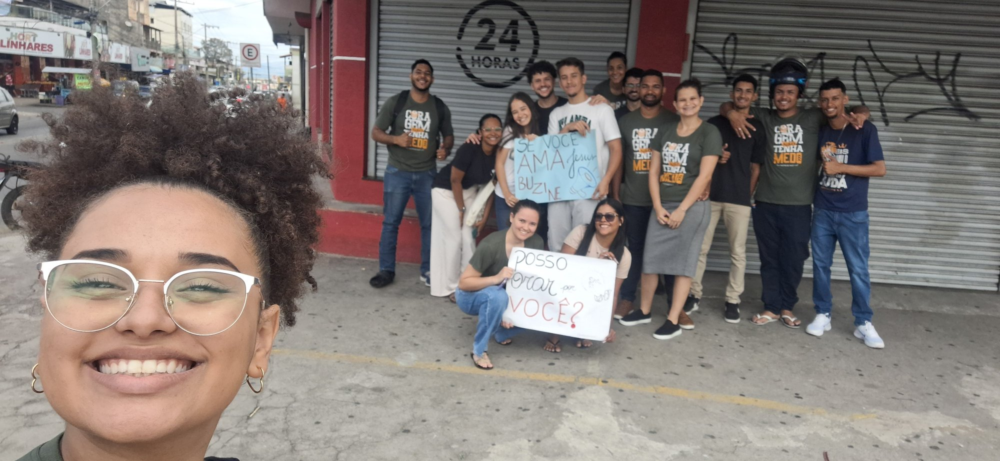

1
Fase 01
Fundamento
Abril - Maio
Apresentar o tema do congresso, criar familiaridade, começar a narrativa.
1 post por semana
Abril a Novembro 2025
21 e 22 de Novembro
"Até que ele seja tudo em nós"
Colossenses 3:15-17
Vamos usar os próximos 8 meses para documentar uma jornada espiritual que leve os jovens até o congresso.
Abril - Maio
Apresentar o tema do congresso, criar familiaridade, começar a narrativa.
1 post por semana
Junho - Julho
Aprofundar o tema, mostrar aplicação prática, construir vínculo.
2 posts por semana
Agosto - Setembro
Gerar expectativa, aumentar presença, mobilizar jovens.
2 posts por semana
Outubro
Criar urgência santa, intensificar convites, mostrar preparação.
2-3 posts por semana
Novembro
Cobertura total, stories constantes, testemunhos, celebração.
3+ posts por semana
Detalhamento mês a mês
| Mês | Fase | Frequência | Posts/Mês | Objetivo |
|---|---|---|---|---|
| Abril | Fundamento | 1 por semana | 4 posts | Apresentar tema |
| Maio | Fundamento | 1 por semana | 5 posts | Estabelecer expectativa |
| Junho | Profundidade | 2 por semana | 8 posts | Aprofundar tema |
| Julho | Profundidade | 2 por semana | 8 posts | Mostrar prática |
| Agosto | Mobilização | 2 por semana | 8 posts | Gerar expectativa |
| Setembro | Mobilização | 2 por semana | 8 posts | Aumentar urgência |
| Outubro | Aquecimento | 2-3 por semana | 10-12 posts | Mobilizar presença |
| Novembro | Explosão | 3+ por semana | 12-15 posts | Cobertura + pós-congresso |
| TOTAL ABRIL-NOVEMBRO | 70-80 posts | |||
Crescimento progressivo: de 1 post/semana até 3+ posts/semana próximo ao congresso.
